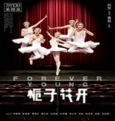

2015年7月因为电影《栀子花开》而认识了你，并且开始慢慢地默默关注你进而慢慢地喜欢上了你，把你当成我的偶像。 在《栀子花开》中你叫许诺，你作为校内闻名的栀子花乐队的主唱和队友为成为职业出道不懈努力着。你为了梦想不懈努力的样子深深地打动了我，让我在求学的路上多了一份坚持。

我知道你是一个热爱公益的热心大男孩。因为你的一个明星、公众人物，有时候难免会被不了解你的人说你是这样做为了炒作。但我知道你不是这样的人，就在2016年你还担任了…春蕾计划…爱心大使，当你从中国儿童少年基金会秘书长朱锡生手中接过荣誉奖牌。优秀春蕾女童代表、北京大学法学院研究生肖娇向你送上象征春蕾女童的雕塑“溪水清清”。 并感谢你对“春蕾计划”的爱心呼吁和资助时，我真的很高兴。
在关注你之后，我看到了你一直努力地去拍戏，努力地提升演技，努力把你自己最好的一面呈现给观众、爱你的人以及让一些否定你的人。有时候看到你工作那么忙就觉得做明星真的不容易。我会一直在你身后默默支持你的，希望你的演技越来越好，也希望你的爱心永不变，期待你接下来所有的作品。 加油＾０＾。